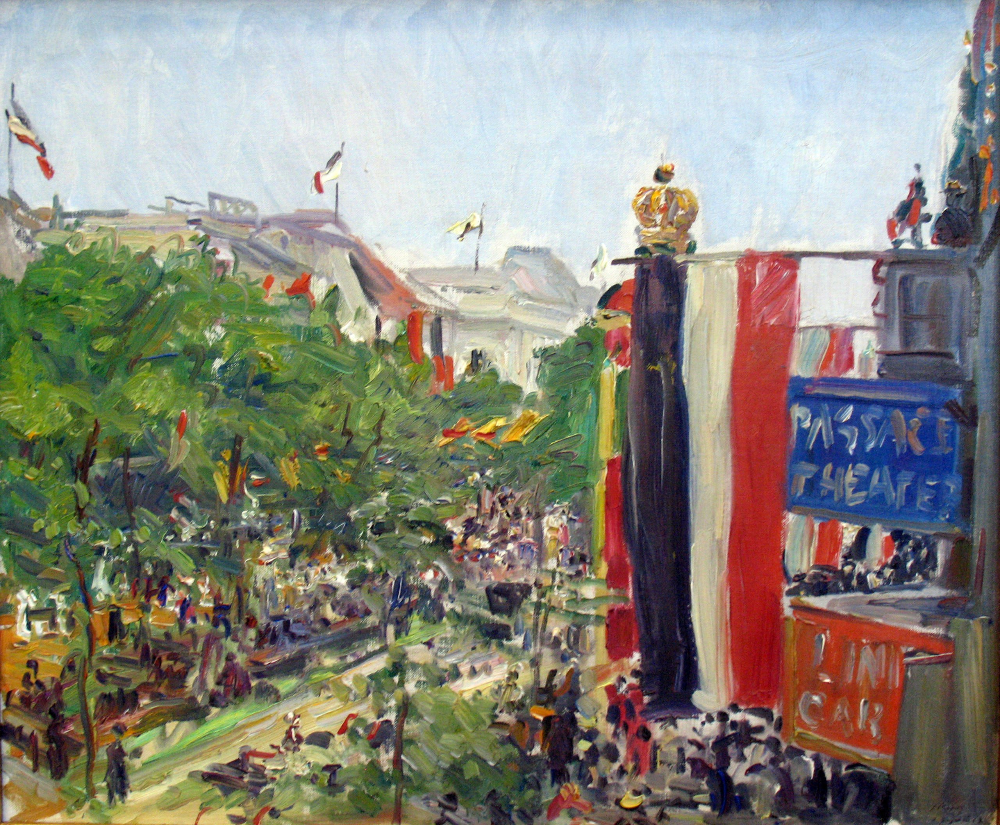

Франц Теодор Макс Слефогт
Unter den Linden (Унтер-ден-Линден), 1913

📄 Холст 🖌 масло
🏛 Старая национальная галерея, Берлин
Передана в 2006 г. из Государственного музея Гессена, Дармштадт.

🏛 Старая национальная галерея, Берлин
Передана в 2006 г. из Государственного музея Гессена, Дармштадт.